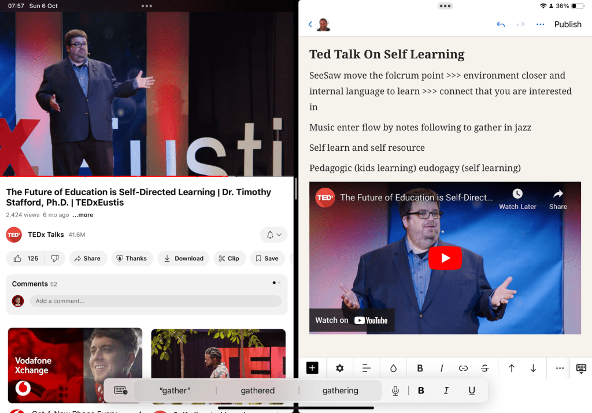

Ted Talk on Self-Directed Learning by Dr. Timothy Stafford, Ph.D.
🎓
In today’s fast-changing world, education is evolving from traditional models to more self-directed, learner-driven approaches. Dr. Timothy Stafford’s TED Talk emphasizes the importance of heutagogy—the concept of self-directed learning—and how it empowers individuals to take control of their own education.
🎯 Shifting the Fulcrum: Empowering Learners
Dr. Stafford highlights the need to move the fulcrum point in education. This shift means bringing the learning environment closer to the learner, making it more personalized and aligned with individual interests. When learners are allowed to connect with what interests them, the learning process becomes more engaging and effective. 🔄
🎶 The Role of Music in Learning
He also touches on the idea of entering a state of flow—the feeling of being fully immersed in an activity. According to Dr. Stafford, using music can help learners find this flow, much like following notes in jazz. 🎷 By bringing rhythm and creativity into learning, students can gather knowledge in a natural, enjoyable way.
📚 Self-Learning and Resources
Self-directed learning is not just about internal motivation but also about accessing the right resources. 📖 Students can now learn through countless online platforms, using slides, databases, and videos to guide their journey. The modern learner has the tools they need at their fingertips, making education a more flexible and individualized experience. 💻
🧠 Pedagogic vs. Heutagogic Learning
Traditional education, often pedagogic in nature, focuses on teacher-directed learning. But Dr. Stafford suggests that learners—especially children—can benefit more from heutagogy, or self-directed learning. 🚸 This approach encourages learners to explore topics that intrigue them, fostering a sense of independence and curiosity.
🔍 Self-Discovery Through Learning
Perhaps the most inspiring message from this TED Talk is the idea of self-discovery. 🎨 When learners have the freedom to explore their passions, they not only gain knowledge but also discover new aspects of themselves. By using modern tools like slides and databases, they are able to create their own pathway to success. 🌟
By embracing self-directed learning, we can move towards a future where learners are empowered to shape their own educational experiences, discovering more about the world—and themselves—along the way. 🚀
Let me know if you'd like to adjust or expand any sections!
Self Notes
Find the ideas that resonate with you
Autonomy(self)(spaceship) discovery(slides)(nurture) resonance(environments) (nature)>>> motivated limbic to learn nextt
SeeSaw move the folcrum point >>> environment closer and internal language to learn >>> connect that you are interested in
Music enter flow by notes following to gather in jazz
Self learn and self resource
Pedagogic (kids learning) heudogagy (self learning)
Self discovery on slides database

Imported from rifaterdemsahin.com · 2024